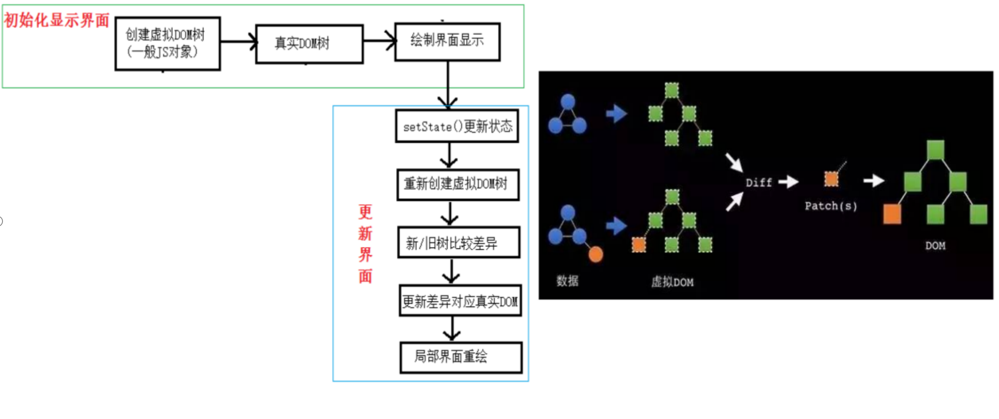

Diffing原理与key的作用

生成随机唯一ID的库，uuid，轻量级的可以选择nanoid
/*
1). react/vue中的key有什么作用？（key的内部原理是什么？）
2). 为什么遍历列表时，key最好不要用index?
1. 虚拟DOM中key的作用：
1). 简单的说: key是虚拟DOM对象的标识, 在更新显示时key起着极其重要的作用。
2). 详细的说: 当状态中的数据发生变化时，react会根据【新数据】生成【新的虚拟DOM】,
随后React进行【新虚拟DOM】与【旧虚拟DOM】的diff比较，比较规则如下：
a. 旧虚拟DOM中找到了与新虚拟DOM相同的key：
(1).若虚拟DOM中内容没变, 直接使用之前的真实DOM
(2).若虚拟DOM中内容变了, 则生成新的真实DOM，随后替换掉页面中之前的真实DOM
b. 旧虚拟DOM中未找到与新虚拟DOM相同的key
根据数据创建新的真实DOM，随后渲染到到页面
2. 用index作为key可能会引发的问题：
1. 若对数据进行：逆序添加、逆序删除等破坏顺序操作:
会产生没有必要的真实DOM更新 ==> 界面效果没问题, 但效率低。
2. 如果结构中还包含输入类的DOM：
会产生错误DOM更新 ==> 界面有问题。
3. 注意！如果不存在对数据的逆序添加、逆序删除等破坏顺序操作，
仅用于渲染列表用于展示，使用index作为key是没有问题的。
3. 开发中如何选择key?:
1.最好使用每条数据的唯一标识作为key, 比如id、手机号、身份证号、学号等唯一值。
2.如果确定只是简单的展示数据，用index也是可以的。
*/
/*
慢动作回放----使用index索引值作为key
初始数据：
{id:1,name:'小张',age:18},
{id:2,name:'小李',age:19},
初始的虚拟DOM：
<li key=0>小张---18<input type="text"/></li>
<li key=1>小李---19<input type="text"/></li>
更新后的数据：
{id:3,name:'小王',age:20},
{id:1,name:'小张',age:18},
{id:2,name:'小李',age:19},
更新数据后的虚拟DOM：
<li key=0>小王---20<input type="text"/></li>
<li key=1>小张---18<input type="text"/></li>
<li key=2>小李---19<input type="text"/></li>
-----------------------------------------------------------------
慢动作回放----使用id唯一标识作为key
初始数据：
{id:1,name:'小张',age:18},
{id:2,name:'小李',age:19},
初始的虚拟DOM：
<li key=1>小张---18<input type="text"/></li>
<li key=2>小李---19<input type="text"/></li>
更新后的数据：
{id:3,name:'小王',age:20},
{id:1,name:'小张',age:18},
{id:2,name:'小李',age:19},
更新数据后的虚拟DOM：
<li key=3>小王---20<input type="text"/></li>
<li key=1>小张---18<input type="text"/></li>
<li key=2>小李---19<input type="text"/></li>
*/